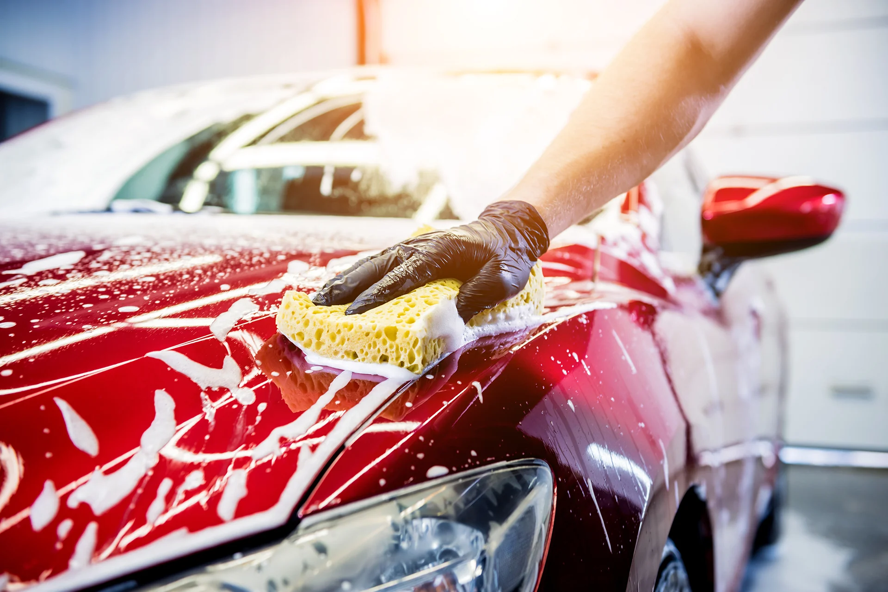

Välkommen till DinRekond! Vi är ett lokalt, personligt företag som erbjuder professionell rekond till bilar och andra fordon direkt på plats hos dig. Med ett öga för detaljer och en passion för perfektion ser vi till att ditt fordon ser ut som nytt igen, oavsett om det gäller interiör, exteriör eller helrekond. Din tid är viktig, därför kommer vi till dig för att göra arbetet så smidigt och bekvämt som möjligt. Låt oss ta hand om ditt fordon – vi levererar kvalitet och glans varje gång!
Våra produkter
På DinRekond prioriterar vi miljön och använder därför endast miljövänliga produkter. De kemikalier vi använder är biologiskt nedbrytbara, vilket innebär att de bryts ner naturligt utan att skada miljön. Detta är särskilt viktigt då vårt tvättvatten kan rinna ner i brunnar och påverka omgivningen. Genom att välja skonsamma och hållbara alternativ ser vi till att både din bil och naturen tas om hand på bästa sätt.
Vårt arbetsplats
Vår arbetsplats är en fullt utrustad skåpbil, anpassad för att leverera professionell rekond var du än befinner dig. Bilen är fylld med allt vi behöver för att ge ditt fordon en grundlig och högkvalitativ behandling – från högtryckstvätt till specialverktyg och miljövänliga produkter. Med vår mobila lösning kan vi erbjuda bekväm service direkt vid din dörr, utan att du behöver lämna hemmet eller arbetsplatsen.
Områden vi kan besöka
Vi använder en specialdesignad vattenbehållande matta som samlar upp allt tvättvatten, vilket gör att vi kan utföra rekond på nästan vilken plats som helst, utan risk för att förorenat vatten når avlopp eller naturen. För att vi ska kunna arbeta säkert och effektivt behöver det dock finnas tillräckligt med utrymme runt fordonet. Detta gör det möjligt för oss att erbjuda våra tjänster även på platser där biltvätt annars är begränsad, så länge lokala regler tillåter det.
Våra priser
Exteriörtvätt – 249 kr
Vår exteriörtvätt ger din bil en noggrann rengöring från topp till tå för endast 250 kr. Vi erbjuder en komplett utvändig tvätt som inkluderar avfettning, däck- och fälgtvätt samt en genomgående detaljering för att få fram den bästa glansen. Perfekt för dig som vill att din bil ska se fräsch och välvårdad ut på utsidan!
Interiörtvätt – 249 kr
Vår interiörtvätt för 249 kr ger din bils insida en fräsch och noggrann rengöring. Vi städar och detaljar hela interiören, från dammsugning av säten och mattor till avtorkning av paneler och rengöring av fönster. Perfekt för att återställa en ren och trivsam känsla i bilen!
Helrekond – 399 kr
För endast 399 kr erbjuder vi en komplett helrekond som inkluderar både invändig och utvändig tvätt. Du får en noggrann exteriörtvätt med avfettning samt däck- och fälgtvätt, och vi detaljstädar även interiören med dammsugning, avtorkning och fönsterrengöring. Genom att välja helrekonden får du ett bättre pris än att bara enbart boka exteriör eller interiör tvätt.